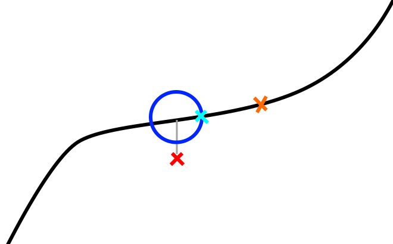

Trajectory Controller¶
Overview¶
The trajectory controller takes in a trajectory and publishes a tracking point — which a low-level controller uses as the immediate pose target — and a look-ahead point — which a local planner uses as its planning start position. The controller can handle two distinct trajectory use cases:
- Fixed trajectories (figure eights, racetracks, circles) used for controls tuning or scripted maneuvers.
- Stitched segments output continuously by a local planner, where new segments are appended to the live trajectory.
The trajectory controller tries to keep the tracking point ahead of the robot in a pure pursuit fashion. The robot's position (red X in the figure below) is projected onto the trajectory. A sphere (cyan circle in 2D) is placed around this projected point and the intersection between the sphere and the forward portion of the trajectory is used as the tracking point (blue X). The lookahead point (orange X) is a fixed time duration further along the trajectory.

Control Architecture¶
The trajectory controller is not itself a feedback controller. It is a pure-pursuit trajectory manager: it advances a reference point along a pre-computed trajectory and publishes that point. Feedback control (closing the loop between the drone's actual state and the reference) is done by a separate downstream node.
The full chain from trajectory to actuator commands is:
Trajectory Controller PID Controller Flight Computer
───────────────────── ────────────── ───────────────
Pure-pursuit advance → Cascaded PID → roll/pitch/yaw-rate/
of virtual_time (position loop + thrust commands
velocity loop) → MAVROS → hardware
~/tracking_point ─────────► ~/tracking_point
~/odometry
PID Controller (pid_controller node)¶
The pid_controller subscribes to ~/tracking_point and runs a cascaded (nested) PID:
- Outer loop — position PID (x, y, z independently):
- Error = tracking-point position − drone position
- Output = desired velocity (vx, vy, vz)
-
Each axis has independent P, I, D, feed-forward, and output-clamp parameters.
-
Inner loop — velocity PID (vx, vy, vz independently):
- Error = desired velocity − measured velocity
-
Output mapped to attitude/thrust commands:
pitch← vx PID outputroll← −vy PID outputthrust← vz PID outputyaw_rate← taken directly from the tracking point's yaw
-
Publishes
mav_msgs/RollPitchYawrateThrustto the flight computer.
Each PID includes an exponential moving-average filter on the derivative term (controlled by _d_alpha) and integral windup clamping against the configured output limits.
Algorithm¶
Core Concepts¶
The controller maintains a virtual time — a scalar representing how far along the trajectory the tracking point currently is. Each timer callback advances virtual time and recomputes the tracking point position.
virtual_time → tracking point pose → published to ~/tracking_point
+ look_ahead_time → published to ~/look_ahead
Timer Callback (20 Hz)¶
On each tick the controller:
-
Computes tracking error — Euclidean distance from the robot to the current virtual tracking point. Published as a diagnostic.
-
Advances virtual time using one of two sub-modes depending on the current trajectory velocity at the virtual point:
- Sphere-intersection mode (normal case when velocity ≥
min_virtual_tracking_velocity):- Searches the trajectory in the range
[virtual_time, prev_vtp_time + look_ahead_time]for the closest waypoint to the robot. This is the projected point. - Casts a sphere of radius
sphere_radius(orvelocity × velocity_sphere_radius_multiplierwhen that param is positive) around the projected point. - Calls
get_waypoint_sphere_intersectionto walk forward up tosphere_radius × search_ahead_factoralong the trajectory from the projected point and find where the sphere boundary intersects the trajectory. This intersection becomes the new virtual tracking waypoint. virtual_timeis set to the projected point's time; the tracking point is placed at the sphere intersection time.
- Searches the trajectory in the range
- Time-advancement mode (slow/stopped case when velocity <
min_virtual_tracking_velocity):- Virtual time is advanced by
time_multiplier × elapsed_time. This prevents the sphere intersection from stalling when the trajectory has zero or near-zero velocity (e.g., at trajectory endpoints).
- Virtual time is advanced by
- Sphere-intersection mode (normal case when velocity ≥
-
Resolves the virtual tracking point — Queries the trajectory at
virtual_time + current_virtual_ahead_timeand converts the resulting waypoint to anairstack_msgs/Odometrymessage (pose, velocity, acceleration, jerk). -
Resolves the look-ahead point — Queries the trajectory at
virtual_time + look_ahead_time(orvirtual_time - look_ahead_timein REWIND mode). -
Applies mode overrides — Zeroes velocity/acceleration/jerk fields as required by the current mode (end of trajectory, PAUSE, ROBOT_POSE, slow-speed clamp).
-
Broadcasts TF frames for the tracking point and look-ahead point (plus stabilized versions with pitch/roll zeroed).
-
Publishes tracking point, look-ahead, diagnostics, and visualization markers.
Trajectory Stitching (ADD_SEGMENT mode)¶
When the local planner publishes a new segment, it is merged into the live trajectory at the closest match point to the segment's start, near virtual_time. Ideally the local planner starts each segment from the lookahead point. The lookahead must be far enough ahead (at least as long as the planner's planning cycle) that the tracking point has not yet passed the start of the new segment when it arrives.
current trajectory: ────────●──────────────────────────────────→
↑ virtual_time
new segment: ●═════════════════════════════→
↑ segment start ≈ lookahead point
merged result: ────────●──────●═════════════════════════════→
REWIND Mode¶
When entering REWIND, the controller:
1. Reverses the internal trajectory representation.
2. Remaps virtual_time to the reversed timeline.
3. Skips forward past any zero/low-velocity section at the current position (rewind_skip_max_velocity, rewind_skip_max_distance) to avoid getting stuck.
4. Sets time_multiplier = -1 and gradually ramps it back up (through transition_dt) to produce a smooth velocity reversal.
When exiting REWIND back to ADD_SEGMENT, the trajectory is reversed again and time is remapped so the robot continues forward from its current position.
Velocity-Scaled Sphere Radius¶
If velocity_sphere_radius_multiplier > 0, the sphere radius scales with current trajectory velocity: radius = velocity × velocity_sphere_radius_multiplier. This makes the controller more responsive at low speeds and gives more look-ahead at high speeds. When the parameter is ≤ 0 (default), the fixed sphere_radius is used.
Architecture¶
flowchart LR
odom["~/odometry\nnav_msgs/Odometry"] --> node
seg["~/trajectory_segment_to_add\nairstack_msgs/TrajectoryXYZVYaw"] --> node
ovr["~/trajectory_override\nairstack_msgs/TrajectoryXYZVYaw"] --> node
svc["set_trajectory_mode\nservice"] --> node
node["trajectory_control_node\n(20 Hz)"]
node --> tp["~/tracking_point\nairstack_msgs/Odometry"]
node --> la["~/look_ahead\nairstack_msgs/Odometry"]
node --> tv["~/trajectory_vis\nMarkerArray"]
node --> dm["~/trajectory_controller_debug_markers\nMarkerArray"]
node --> te["~/tracking_error\nFloat32"]
node --> pct["~/trajectory_completion_percentage\nFloat32"]
node --> tt["~/trajectory_time\nFloat32"]
node --> vel["~/tracking_point_velocity_magnitude\nFloat32"]
node -->|TF| tf1["{tf_prefix}tracking_point"]
node -->|TF| tf2["{tf_prefix}tracking_point_stabilized"]
node -->|TF| tf3["{tf_prefix}look_ahead_point"]
node -->|TF| tf4["{tf_prefix}look_ahead_point_stabilized"]Parameters¶
Parameter |
Default | Description |
|---|---|---|
tf_prefix |
"" |
Prefix for published TF frame names (e.g. "uav1/" for multi-robot). |
target_frame |
"world" |
Frame in which the tracking point and lookahead point are expressed. Odometry is transformed into this frame on receipt. |
execute_target |
50.0 |
Target control loop rate (Hz). The timer actually runs at 20 Hz; this affects transition_dt calculations. |
look_ahead_time |
1.0 |
Fixed time offset (seconds) ahead of the tracking point at which the lookahead point is placed. Should be larger than the local planner's planning cycle time. |
virtual_tracking_ahead_time |
0.5 |
Additional time offset added to the virtual tracking point lookup. |
min_virtual_tracking_velocity |
0.1 |
Velocity threshold (m/s) below which the controller switches from sphere-intersection mode to time-advancement mode. Also suppresses output velocity/acceleration when the trajectory is effectively stopped. |
sphere_radius |
1.0 |
Radius (m) of the sphere used to advance the tracking point in sphere-intersection mode. Larger values push the tracking point further ahead, increasing effective look-ahead distance. |
velocity_sphere_radius_multiplier |
-1.0 |
If positive, overrides sphere_radius with velocity × this_value, giving a velocity-proportional look-ahead. Set ≤ 0 to use fixed sphere_radius. |
search_ahead_factor |
1.5 |
The algorithm searches sphere_radius × search_ahead_factor meters ahead from the projected point to find the sphere intersection. Increase only if the trajectory zigzags sharply relative to sphere_radius. |
tracking_point_distance_limit |
10.5 |
(Declared but not currently used in main logic; reserved for future clamping.) |
velocity_look_ahead_time |
0.9 |
Time offset used when computing the velocity look-ahead. |
ff_min_velocity |
0.0 |
Feed-forward minimum velocity threshold. |
transition_velocity_scale |
1.0 |
Scales how quickly time_multiplier ramps from −1 → +1 during REWIND ↔ ADD_SEGMENT transitions. Higher values give faster transitions. |
traj_vis_thickness |
0.03 |
Thickness (m) of trajectory visualization markers in RViz. |
rewind_skip_max_velocity |
0.1 |
When entering REWIND, waypoints with velocity below this threshold (m/s) near the current position are skipped to avoid the controller getting stuck at a slow/stopped section. |
rewind_skip_max_distance |
0.1 |
Maximum arc-length (m) to skip forward when entering REWIND. |
Services¶
~/set_trajectory_mode — airstack_msgs/srv/TrajectoryMode¶
Switches the controller between operating modes. Returns success: true on all valid mode transitions.
| Mode constant | Value | Description |
|---|---|---|
ROBOT_POSE |
1 | Tracking and lookahead points are set to the robot's current odometry pose (zero velocity). Used before takeoff while the robot may be moved manually. Clears the stored trajectory. |
TRACK |
2 | Interprets messages on ~/trajectory_override as a complete trajectory to follow from the beginning. Clears any previous trajectory. Suitable for takeoff, landing, and fixed maneuvers. |
ADD_SEGMENT |
3 | Appends messages on ~/trajectory_segment_to_add onto the live trajectory at the point closest to the segment start. Used during autonomous flight with a continuously replanning local planner. |
PAUSE |
0 | Freezes the tracking point at its current position (virtual time stops advancing). The robot's low-level controller will hold position at the frozen tracking point. |
REWIND |
4 | Reverses playback along the trajectory. The drone backtracks along its recent path, useful for recovering from stuck situations. |
Transition notes:
- REWIND → ADD_SEGMENT: Trajectory is reversed again and virtual time is remapped. The controller ramps velocity smoothly from backward to forward.
- Any mode → ROBOT_POSE or TRACK: Trajectory is cleared.
- PAUSE → ADD_SEGMENT: Resumes from the current position without clearing the trajectory.
Subscriptions¶
Topic |
Type | QoS | Description |
|---|---|---|---|
~/odometry |
nav_msgs/Odometry |
BestEffort, depth 1 |
Robot state. Transformed into target_frame on receipt. Matches MAVROS publisher QoS. |
~/trajectory_segment_to_add |
airstack_msgs/msg/TrajectoryXYZVYaw |
Reliable, depth 1 | Trajectory segment to stitch onto the current trajectory (ADD_SEGMENT mode). Typically the local planner output starting at the current lookahead point. |
~/trajectory_override |
airstack_msgs/msg/TrajectoryXYZVYaw |
Reliable, depth 1 | Complete trajectory replacing the current one (TRACK mode). |
The TrajectoryXYZVYaw message contains a WaypointXYZVYaw[] array where each waypoint carries position (x, y, z), scalar speed v, and yaw. The trajectory library computes timing and derivatives from these waypoints.
Publications¶
Topic |
Type | Description |
|---|---|---|
~/tracking_point |
airstack_msgs/msg/Odometry |
The current virtual tracking point: pose, velocity, acceleration, and jerk along the trajectory. The low-level controller drives the drone toward this point. |
~/look_ahead |
airstack_msgs/msg/Odometry |
The look-ahead point: pose and derivatives a fixed look_ahead_time seconds ahead of the tracking point. The local planner starts each new trajectory segment from this point. |
~/traj_drone_point |
airstack_msgs/msg/Odometry |
The projected drone point: pose at virtual_time on the trajectory (before the sphere-intersection look-ahead is applied). |
~/projected_drone_pose |
geometry_msgs/msg/PoseStamped |
The 3D pose of the closest trajectory waypoint to the robot, as a lightweight PoseStamped. |
~/virtual_tracking_point |
airstack_msgs/msg/Odometry |
Alias/debug copy of the tracking point. |
~/closest_point |
airstack_msgs/msg/Odometry |
The globally closest point on the entire trajectory to the robot. (Currently disabled in code; reserved for future use.) |
~/trajectory_completion_percentage |
std_msgs/msg/Float32 |
Percentage of the trajectory completed: virtual_time / duration × 100. |
~/trajectory_time |
std_msgs/msg/Float32 |
Current trajectory time in seconds. In REWIND mode this counts down from the trajectory duration. |
~/tracking_error |
std_msgs/msg/Float32 |
Euclidean distance (m) from the robot's current position to the virtual tracking point. |
~/tracking_point_velocity_magnitude |
std_msgs/msg/Float32 |
Speed (m/s) of the tracking point as it moves along the trajectory. |
~/trajectory_vis |
visualization_msgs/msg/MarkerArray |
Trajectory path rendered as colored line-strip markers in RViz. Thickness controlled by traj_vis_thickness. |
~/trajectory_controller_debug_markers |
visualization_msgs/msg/MarkerArray |
Debug spheres and markers: the sphere around the projected point (cyan), the intersection point (green), and the search end point (blue). |
TF Frames¶
Four TF frames are broadcast on every tick, all in target_frame:
| Frame | Description |
|---|---|
{tf_prefix}tracking_point |
Full 6-DOF pose of the tracking point (includes pitch and roll from the trajectory). |
{tf_prefix}tracking_point_stabilized |
Tracking point with pitch and roll zeroed — suitable for camera or gimbal frames. |
{tf_prefix}look_ahead_point |
Full 6-DOF pose of the look-ahead point. |
{tf_prefix}look_ahead_point_stabilized |
Look-ahead point with pitch and roll zeroed. |